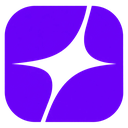

Install in minutes
Start from the USB stick, click Install midnightOS, pick a disk. A first-start setup then asks for your Wi-Fi, name and PIN.
Developer Preview · Build 0.9
A calm, fast desktop built on Debian. Try it straight from a USB stick, then install it on your PC in a few minutes.
Free · 64-bit PC · about 3 GB · Setup downloads the system and writes your USB stick for you

Take the tour
What's inside
Start from the USB stick, click Install midnightOS, pick a disk. A first-start setup then asks for your Wi-Fi, name and PIN.
Set it up during first start or in Settings. Your face data is kept on your PC and never leaves it.
A bold, tile-based web browser with its own icons, colours and a lively first-run welcome. Ships as a regular Debian package.
Changes to the system ask first, and show exactly which app is asking and what it wants to run.
Drag a window to an edge, or hover its maximise button, to tile your apps side by side. All windows shows everything at once.
An encrypted folder for your most private files. It stays locked until you unlock it.
See your phone's notifications, send files and share the clipboard with your PC.
Frame rate, recording and quick settings over any game, one shortcut away.
New icons, a white boot spinner, thin type and an original set of system sounds, all made for midnightOS.
How to install
Run midnightOS Setup on a Windows PC, choose a folder, and it downloads the system image (ISO) and checks that every byte arrived correctly.
Click Flash to USB and pick a stick of 8 GB or more. Everything on the stick is replaced. Prefer to do it yourself? Any image writer works too.
Restart, open your PC's boot menu (often F12, F11 or Esc) and choose the USB stick. Try midnightOS, then double-click Install midnightOS.
Before you start: turn off Secure Boot in your PC's firmware settings. Installing erases the disk you pick, so back up anything you want to keep.
Download

Recommended · a small app (about 100 KB)
Windows may say the app is from an unknown publisher, because the preview isn't signed yet. Choose More info › Run anyway.
For Linux and Mac users, or your own USB tool
GitHub stores files up to 2 GB, so the image comes in parts. Download all of them, then join them:
Windows (Command Prompt):
copy /b midnightOS.iso.part1 + midnightOS.iso.part2 midnightOS.isoLinux or Mac:
cat midnightOS.iso.part* > midnightOS.isoThen check it: the SHA-256 should belisted in release.json
Questions
Yes. Starting from the USB stick runs the whole system without touching your disk. Nothing is changed until you choose Install midnightOS and confirm.
Not in this preview. Setup installs midnightOS on the whole disk you pick. Use a spare PC or a second disk, and back up first.
It's a Developer Preview: for testing and feedback, not your only PC. Expect rough edges and updates.
The preview's boot loader isn't signed yet. Signed builds are planned; until then, Secure Boot has to be off for the PC to start it.
It runs Linux apps from Debian, Flatpak apps, and many Windows programs through a compatibility layer. Some apps and games won't work.